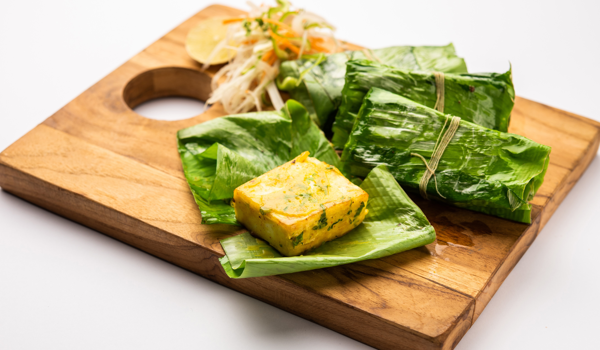

Famous Foods of Gujarat
Dhokla

Dhokla Recipe:
- Ingredients:
- 1 cup besan (gram flour)
- 1/2 cup yogurt
- 1 tablespoon ginger-green chili paste
- 1 teaspoon mustard seeds
- 1 teaspoon turmeric powder
- 1 teaspoon baking soda
- 1/2 teaspoon sugar
- 1 tablespoon lemon juice
- Salt to taste
- 2 tablespoons oil
- Instructions:
- Mix besan, yogurt, ginger-green chili paste, turmeric powder, baking soda, sugar, lemon juice, and salt to make a smooth batter.
- Grease a steaming tray and pour the batter into it.
- Steam for 15-20 minutes until a toothpick comes out clean.
- Heat oil in a pan, add mustard seeds, and let them splutter. Pour over the steamed dhokla.
- Cut into pieces and serve hot.
Khandvi

Khandvi Recipe:
- Ingredients:
- 1 cup besan (gram flour)
- 1 cup yogurt
- 1 cup water
- 1 tablespoon ginger-green chili paste
- 1 teaspoon turmeric powder
- 1/2 teaspoon mustard seeds
- 1 tablespoon sesame seeds
- 1 tablespoon oil
- Salt to taste
- Instructions:
- Mix besan, yogurt, water, ginger-green chili paste, turmeric powder, and salt to make a smooth batter.
- Pour the batter into a pan and cook on low heat, stirring continuously, until it thickens.
- Spread the mixture evenly on a greased surface and let it cool.
- Cut into strips and roll them up.
- Heat oil in a pan, add mustard seeds and sesame seeds, and pour over the rolled khandvi.
- Serve with chutney.
Undhiyu

Undhiyu Recipe:
- Ingredients:
- 1 cup mixed vegetables (potatoes, sweet potatoes, carrots, beans)
- 1/2 cup fenugreek leaves
- 1/2 cup peanuts
- 1 tablespoon ginger-green chili paste
- 1 teaspoon cumin seeds
- 1 teaspoon coriander powder
- 1/2 teaspoon turmeric powder
- 1 teaspoon garam masala
- 2 tablespoons oil
- Salt to taste
- 1/2 cup water
- Instructions:
- Heat oil in a pan, add cumin seeds, and sauté for a minute.
- Add ginger-green chili paste and cook for a minute.
- Add chopped vegetables, fenugreek leaves, peanuts, coriander powder, turmeric powder, garam masala, and salt. Mix well.
- Add water, cover, and cook until vegetables are tender.
- Serve hot with puris or rotis.